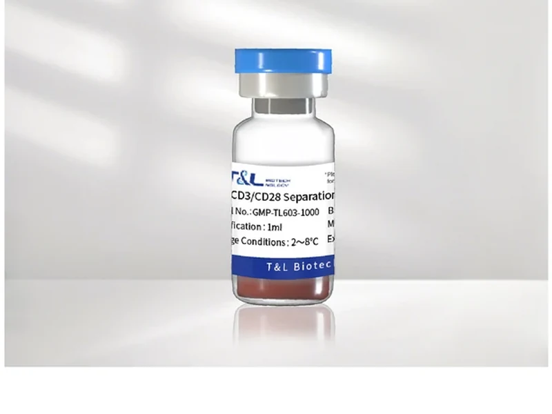
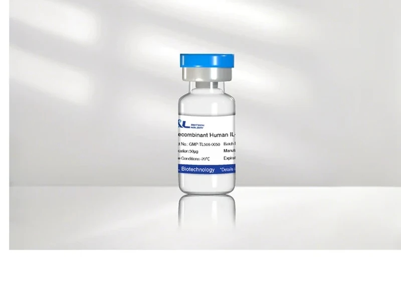

Life science tools, designed in silico and proven at the bench.
T&L builds an AI-native tool stack for discovery teams: recombinant proteins, antibodies, separation reagents and culture systems — designed against your target, validated in our own laboratory, and delivered through a network of qualified facilities.



 +38 more
+38 more
Four layers, one loop.
Most suppliers live in one layer. The leverage comes from owning the path between them — where a failed assay becomes the next design brief.
Assay and process data
Every lot, every protocol, every failed condition is recorded in a structured form. This is the layer most tool vendors never build.
Design and optimisation models
Sequence and formulation models propose candidates; our scientists decide what is worth making. Models narrow the search space, they do not replace judgement.
Physical reagents
Proteins, antibodies, magnetic beads and defined media — the part your experiment actually touches. Designed for the assay, not for a catalogue slot.
Capacity to run the work
Our own 3,200 m² laboratory, plus qualified partner facilities that absorb overflow. One order, routed to whichever bench can run it best.
Design, test, learn, repeat.
Every project runs the same four steps. The difference is that step four feeds step one with data you cannot buy.
Target, assay, constraints and the failure modes you already know about.
Model-guided candidate generation, reviewed by an application scientist.
Bench testing in our lab — binding, potency, stability, lot consistency.
Transfer to GMP or partner capacity, with documentation that travels.
Most tool vendors sell you layer three and stop. The value is in the loop between the layers — a design that fails the bench becomes data, and the next design is better.
A portfolio that grows with the platform.
Four families in catalogue today, four more in development. Each one extends the same design and validation loop.
02
03
 04
Beads
mAbs
Proteins
04
Beads
mAbs
Proteins

Proteins
Media
Built around the workflow, not the SKU.
Pick the cell type you are working with and the stack reorganises around it.
Engineered T cells, from apheresis to fill-finish
A matched isolation–activation–expansion set built around CD3/CD28 signalling, so your process development team can lock a single vendor for the critical reagents.


Manual today. Automated on a stated timeline.
We would rather publish the roadmap than pretend the capability already exists. Here is exactly where we are, and what changes when.
Every project is run by a named scientist. Low throughput, high judgement — which is exactly what early programmes need.
- Named application scientist per project
- Bench-scale, 1–5 L
- 7–10 day typical turnaround
Liquid handling and scheduling layers remove the repetitive steps, so the same team can carry more concurrent projects without losing oversight.
- Automated liquid handling on core assays
- Digital work instructions
- Capacity up ~3×
A scheduling layer routes orders across qualified sites. Throughput becomes a function of the network, not of one building.
- Multi-site capacity routing
- Standardised data return
- Order-to-result SLA
One order. Many benches.
Throughput should not be limited by the size of one building. Work is routed to whichever qualified facility can run it best.
One specification, one contract, one point of contact — regardless of where the work runs.
Each partner facility is audited on method fit, data format and turnaround before it receives work.
The scheduler assigns each batch to the bench with the right capability and free capacity.
Results come back in one format, under our quality system, with our name on the report.
Your first call is a scientist, not a sales rep.
Application support sits between your protocol and our roadmap. The team has run these workflows inside instrument and reagent companies before — which is why the questions they ask on the first call are the ones that decide whether a project is feasible.
- Protocol review before you commit to a reagent
- Failure-mode triage on existing workflows
- Direct line into product development for custom builds
Reviews your protocol before a single reagent ships — and feeds what fails back into the design layer.
Notes from the bench and the model.
Protocols, regulatory explainers and design notes from the people doing the work.
 Regulatory
RegulatoryWhat an FDA DMF actually buys you when you licence a CGT raw material
A Type II DMF is not an approval — it is a closed reference. Here is how sponsors use DMF 038124 during an IND review, and what the auditor will ask for next.
Read Technical
TechnicalBead size, steric hindrance and why 50 nm changes your activation readout
Comparing 4.5 µm and 50 nm particles in CD3/CD28 activation: the effect on cell-surface availability, expansion fold and downstream transduction efficiency.
ReadFeeder-free NK expansion from cryopreserved CBMC: a 14-day protocol
A step-by-step protocol using AMMS® NK Cell Culture Kit 3.0, including seeding density, feeding cadence and the purity you should expect at day 14.
ReadBring us the assay that is not working.
Tell us the target, the workflow and where it breaks. An application scientist replies within one business day — with a feasibility view, not a catalogue link.